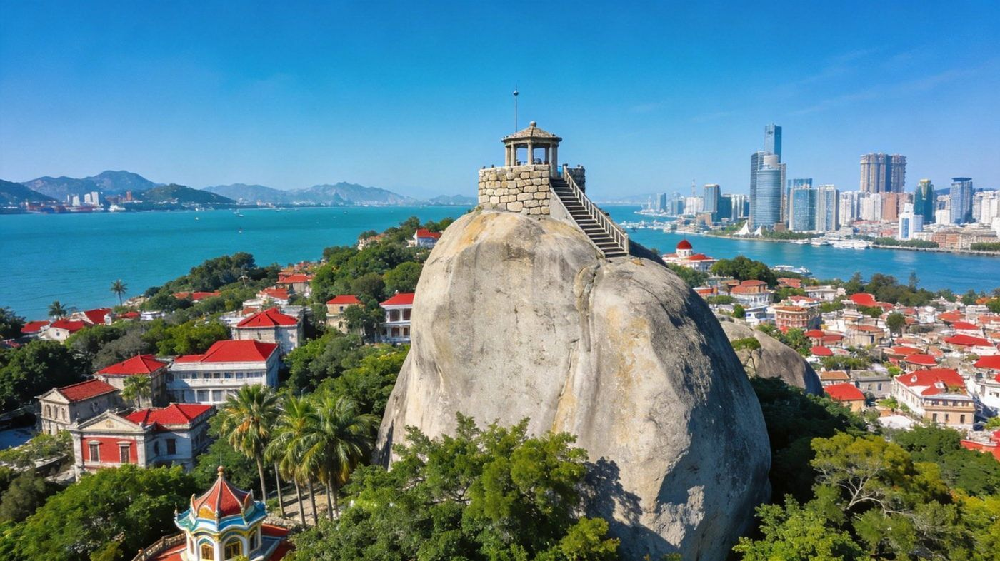
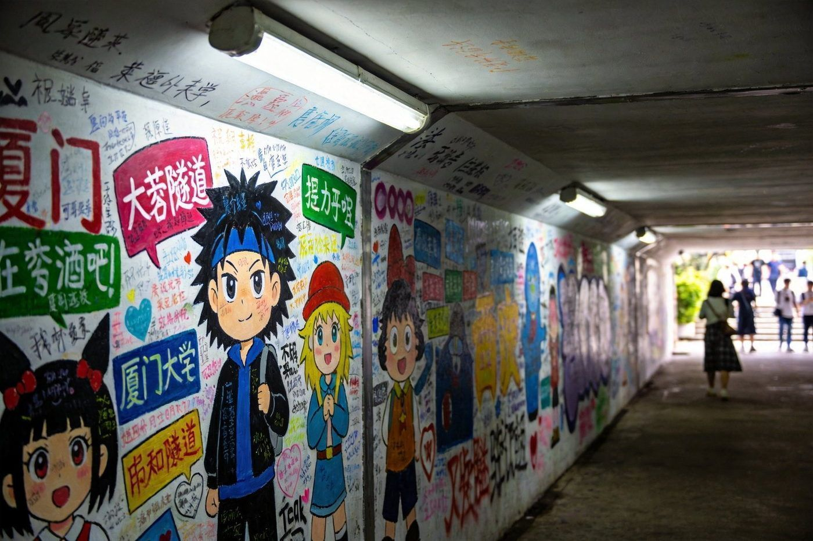
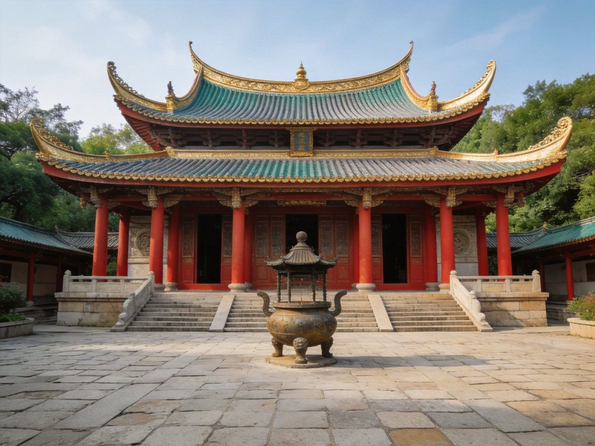
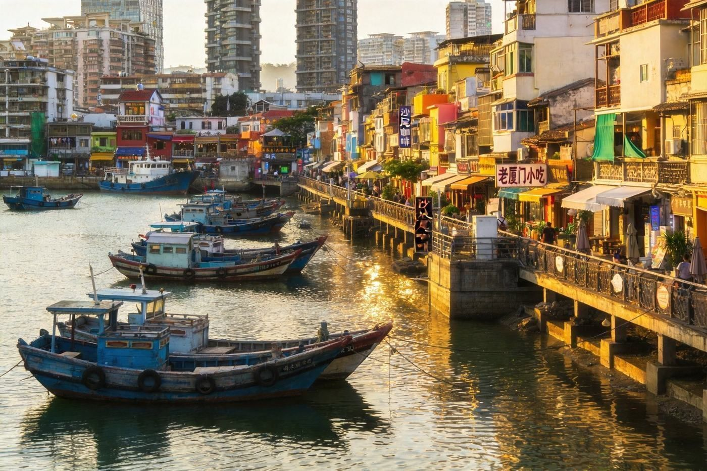

🏝️ 厦门 · XIAMEN TRAVEL GUIDE
厦门双版组合指南
一份搞定两种玩法：2天周末冲刺版 适合请不动假的上班族，极限玩到精华；5天松弛深度版 适合有假期，慢慢住、慢慢逛、甚至上岛过夜。1–3 人出行均适用，含日程 / 住宿 / 美食 / 预算。
📍 目的地：厦门
👥 1–3 人
⏱️ 2 天 / 5 天双方案
💰 人均预算已附
⚡2 天周末 · 快充版
适合只有周末、想快速过瘾。核心策略：鼓浪屿占 1 天，另一半塞进厦大+海边，别贪多。
👥 1–3 人适配：各行程点均不限人数；住宿与餐饮按 2 人房、人均分摊计价，3 人加床或开双房更划算。下方预算按 人均 标注。
🗺️ 行程安排
-
DAY 1 · 鼓浪屿 + 中山路夜
🚢 上午 8:30 轮渡上岛（提前订票）🏛️ 日光岩登顶🏠 岛上老别墅群
🍱 中午 岛上小吃/海鲜面🎹 钢琴博物馆📸 最美转角打卡
🚢 下午 4-5 点返程🍜 晚上 中山路小吃街扫街
⚠️ 船票节假日紧张，务必提前在官网/官方小程序订；上岛后别跟着大队走，往小巷钻人少景好。
-
DAY 2 · 厦大 + 环岛路 + 收尾
🏫 上午 厦门大学（需预约）🕳️ 芙蓉隧道涂鸦🙏 南普陀寺 + 素饼
🌊 下午 白城沙滩 → 环岛路骑行🎨 沙坡尾/猫街文艺扫街
🌇 傍晚 黄厝/椰风寨看日落🚄 晚上 动车返程
💡 厦大需提前预约（入校参观）；环岛路可租共享单车或电单车，晴天骑行体验最佳。
🌊5 天深度 · 慢享版
适合有假期的松弛玩法：上鼓浪屿住一晚感受夜清，再抽一天去世界遗产土楼。若时间再挤 2 天，土楼可升级为 2 日游。
👥 1–3 人适配：第 2 晚可住鼓浪屿民宿（2 人房人均分摊）；土楼一日游可选包车或当地拼团，3 人包车更划算。下方预算按 人均 标注。
🗺️ 行程安排
-
DAY 1 · 抵达 + 老厦门烟火
✈️/🚄 抵达厦门🏙️ 中山路骑楼夜景🦐 晚上 八市海鲜市场 + 自选加工晚餐
💡 第一晚住市区：厦大/中山路一带，交通餐饮都方便。
-
DAY 2 · 鼓浪屿全天（上岛过夜）
🚢 上午 轮渡上岛⛰️ 日光岩登顶全景🏠 老别墅 + 钢琴博物馆
📸 傍晚 最美转角、在海边看日落🌙 夜宿岛上 逛安静小巷
🛏️ 一定要住岛上 1 晚！白天游客散去后，清晨和夜晚的鼓浪屿才是它的本来样子。
-
DAY 3 · 厦大 + 海边骑行
🚢 上午 离岛回市区🏫 厦门大学（预约）🙏 南普陀 + 素饼
🌊 下午 白城沙滩 → 环岛路骑行🌇 傍晚 黄厝/椰风寨日落
💡 骑行累了就在海边咖啡厅歇脚，别赶时间，5 天版本允许慢。
-
DAY 4 · 文艺 + 嘉庚建筑
🎨 上午 沙坡尾 + 猫街文艺街区☕ 下午茶 + 手作小店
🏛️ 下午 集美学村（嘉庚建筑）🌆 晚上 自由活动/夜宵
💡 集美学村地铁直达、人少安静，避高峰好去处。
-
DAY 5 · 收尾 +（可选）土楼
🛍️ 上午 买伴手礼（中山路）🍜 中午 最后一顿海鲜/沙茶面
🚄 下午/晚上 返程
🏯 升级玩法：若能把 5 天再挪 1–2 天，强烈建议加 南靖/永定土楼一日游或两日游——世界文化遗产，厦门周边最值得的一程（自驾或当地拼团，约 300–600 元/人）。
⭐特色景点 · 单独详览
把厦门最有辨识度的 5 个点单独拎出来看图说清楚——值不值得去、怎么玩、藏在哪。

日光岩 · 鼓浪屿最高点
鼓浪屿
日光岩 · 登顶看全景
鼓浪屿西南部的制高点，由一块巨大圆润的花岗岩构成。登顶可 360° 俯瞰整座鼓浪屿的红顶老别墅群、对岸厦门岛的城市天际线与无边海景，是这座小岛最标志性的"打卡坐标"。
👍 必去理由：不来日光岩，等于没到鼓浪屿。建议清晨或傍晚登顶，阳光柔和、人相对少，拍照最出片；山路用护栏+台阶，体力要求不高。
配图：原创生成 · 无版权风险

芙蓉隧道 · 网红告白墙
厦门大学
芙蓉隧道 · 行走的青春涂鸦墙
全国高校里少见的超长涂鸦隧道，数百米墙面被历届学生的壁画、告白与留言层层铺满，既有专业墙绘，也有无数游客和学子留下的青春印记。
👍 必去理由：文艺又接地气，随手一拍都满载校园青春感。适合边逛边找"我爱妳，再见"等经典标语；隧道内较暗，注意看路。
配图：原创生成 · 无版权风险

南普陀寺 · 千年闽南古刹
思明区
南普陀寺 · 闽南古刹 + 素饼
紧邻厦门大学的千年古刹，闽南传统燕尾脊建筑庄重精致。香火旺盛，寺前的放生池与荷塘宁静清幽，寺院还以素饼（绿豆/椰蓉馅）出名，是本地人爱带的伴手礼。
👍 必去理由：与厦大、白城沙滩安排在同一段顺路游览。进门免费，素饼可现买带走；傍晚游客散去后更显清幽。
配图：原创生成 · 无版权风险

沙坡尾避风坞 · 老渔港重生
思明区
沙坡尾 · 文艺与烟火并存
厦门最古老的避风坞之一，老渔船停泊的港湾两岸，错落着旧骑楼、涂鸦墙、独立咖啡馆、手作店与小吃铺，是"老厦门"生活与年轻文艺潮流碰撞的地方。
👍 必去理由：比起网红店扎堆的曾厝垵，这里更有味道。适合下午来，逛手作、喝咖啡、看渔船，逛完就近去猫街拍照。
配图：原创生成 · 无版权风险
南靖土楼 · 藏在山里的世界遗产
5天升级·周边
南靖土楼 · 世界文化遗产
厦门周边 1.5–2 小时车程的南靖/永定客家土楼群，是《大鱼海棠》取景地。圆形土楼（"四菜一汤"）依山而建、与梯田环抱，被誉为"东方古城堡"，被列入世界遗产。
👍 必去理由：5 天版强烈推荐的周边行程。可自驾或当地拼团一日游（约 300–600 元/人）；建议晴天去，山野梯田+土楼最出片。
配图：原创生成 · 无版权风险
🏨住宿推荐
三档价位，均为 2 人房计，多人出行请按需调整。
经济型
青旅 / 经济连锁酒店
约 100–180 元/晚 · 人均 50–90
思明区（厦大/中山路一带）交通便捷。适合预算紧、只睡不挑的年轻组合。
中端舒适
精品民宿 / 中档连锁
约 250–450 元/晚 · 人均 125–225
环岛路海边景观、曾厝垵文艺民宿。2 人分摊性价比高，3 人可选家庭房。
高端体验
海景度假酒店 / 岛上民宿
约 600–1200 元/晚 · 人均 300–600
海景房看日出、鼓浪屿特色老别墅民宿。5 天深度的鼓浪屿过夜首选。
🍜厦门必吃清单
口味随人数可按份点，1–3 人均适用。
💰预算对比（人均）
含 1–3 人出行说明；区间为保守–宽松，实际以淡旺季与选择为准。
厦门2天与5天方案人均预算对比
| 项目 | 2天周末版 | 5天深度版 |
|---|
| 大交通（往返） | 约 300–600 | 约 300–600 |
|---|
| 住宿 | 1 晚 80–300 | 4 晚 400–1200 |
|---|
| 餐饮 | 约 200–350 | 约 450–700 |
|---|
| 景点/船票 | 约 80–150 | 约 150–300 |
|---|
| 市内交通 | 约 40–80 | 约 100–200 |
|---|
| 可选（土楼） | — | 约 300–600 |
|---|
| 合计 · 人均 | 约 900–1500 | 约 2000–3300 |
|---|
💡 1–3 人怎么省：住宿双人房人均分摊最划算（3 人加床或双房次之）；美食按份多人共享省预算；土楼拼团比独立包车更便宜；避开节假日可显著降低房费与船票抢购压力。